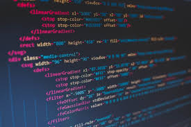

Skills
- Drawing
- Painting
- WEb App Developer

Proficient in HTML, CSS, JavaScript
- Programmer
Programmimg Languages: Familiar with Python, Java
For me, drawing is a means of expressing my creativity and capturing the world around me with precision and detail. It allows me to translate my thoughts, ideas, and observations into visual form, using tools like pencils, pens, and charcoal. Through drawing, I can explore different techniques and styles, refine my artistic skills, and create intricate artworks that convey my unique perspective.
Painting, for me, is a way to bring my imagination to life with color and texture. It enables me to experiment with various mediums, such as acrylics, oils, and watercolors, to produce vibrant and dynamic pieces of art. Painting is not just a hobby but a passion that allows me to express my emotions, tell stories, and share my vision with others. It is a continuous journey of learning and growth, where each brushstroke adds depth and meaning to my work.